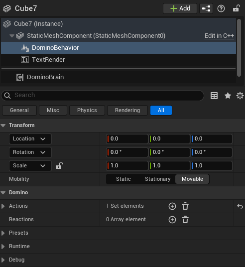
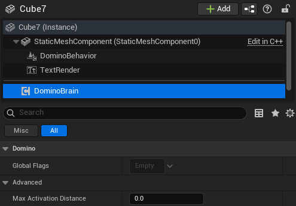

Brain and Behavior components
Brain Component

The Brain Component is required on any Actor that owns one or more Behavior Components.
It acts as:
- A registry for all Behavior Components attached to the Actor
- A container for global flags active at the Actor level
- A shared decision layer that Behavior Components can query
An Actor may have multiple Behavior Components attached to different Primitive Components, but it must have only one Brain Component.
Behavior Component

The Behavior Component is responsible for handling localized systemic logic on an Actor.
It is a SceneComponent that must be attached to a PrimitiveComponent, allowing it to emit and receive stimuli through the attached component’s OnHit and OnOverlap events.
Behavior vs Brain
Behavior Component
- Is a
SceneComponent - Must be attached to a
PrimitiveComponent, allowing it to interact through the component’sOnHitandOnOverlapevents for contact-based stimulus propagation - Represents localized logic tied to a specific physical part of an Actor
Contains:
- Actions
- Reactions
- Local component flags
Brain Component
- Exists once per Actor
- Is not tied to a specific primitive
- Provides shared state and coordination
Contains:
- Global Actor-level flags
- References to registered Behavior Components
Why This Separation Exists
This separation allows:
- Multiple localized behaviors (e.g., head, body, weapon, sensor)
- A centralized Actor-level state (e.g., Alerted, Disabled, Powered)
- Clean separation between physical interaction zones and global logic
For example:
- A Behavior Component attached to a weapon may emit a Noise stimulus.
- A different Behavior Component attached to the character’s body may react to damage.
- Both can query the Brain to check if the Actor has a global flag such as IsAlerted.
The Brain ensures consistency across all behaviors without tightly coupling them together.